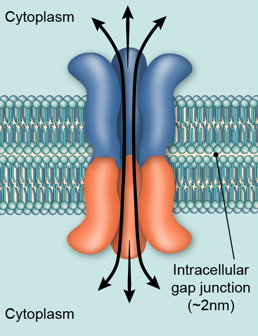
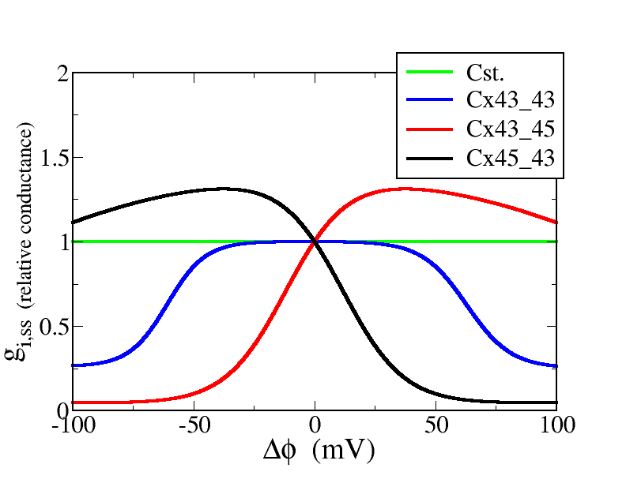
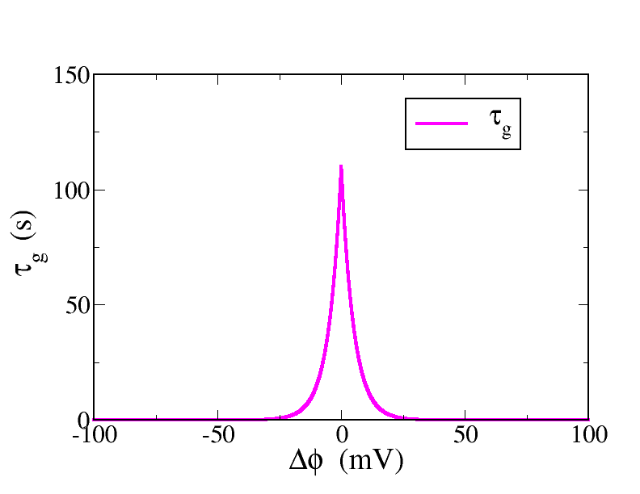
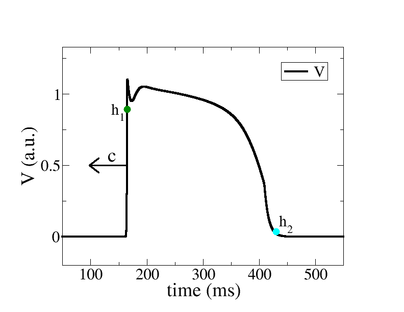
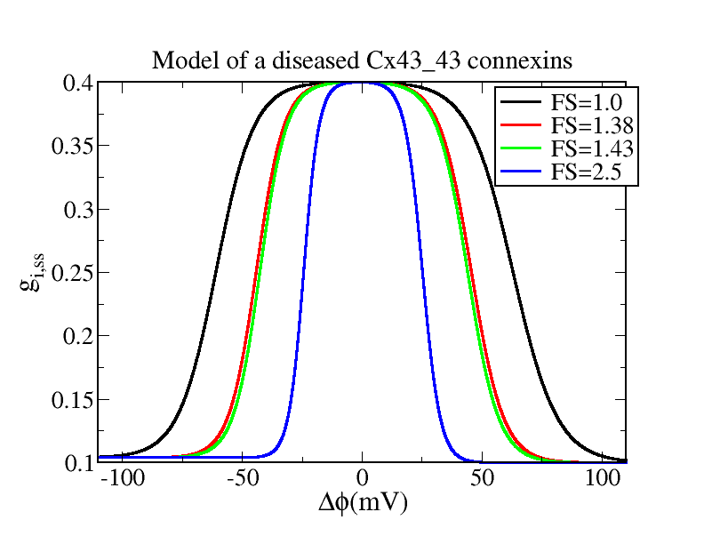

Connexins dynamics
In the study of the cardiac
wave propagation, one encounters an important ingredient in the
modeling:
these are the Gap Junctions (GJ) that connect electrically neighboring
myocytes.
The GJ are formed with different types of connexins and the connexins
dynamics
has been studied in careful physiological experiments [1].
Gap junctions are important in
cardiac muscle: the signal to contract is passed efficiently through
gap junctions, allowing the heart muscle cells to contract in unison.
The GJ are formed with several types of connexins. The equation that
governs the dynamics can be modeled simply as follows:
 - g_i}{\tau_g (\Delta \phi)}")
(Equation 1)
where ΔΦ denotes the difference in intra-cellular
electrical potential between two adjacent cells. The subindice ss
indicates the steady state value and τg is the time
scale associated with the dynamics and it depends also on ΔΦ.
Below we show the characteristic functions that are essential
ingredients for our modeling purpose.
|
 |
Steady state characteristic
|
Time constant
|
Action potential
|

|

|

|
Some examples of connexins dynamics
In the following, I illustrate the dynamics of a strand
of connexins (1D system) that is periodically excited by a propagating
action potential. The interesting phenomena occur when the
characteristics of the connexins are set to mimick a diseased cardiac
tissue (ischemic situation). One can lower the overall conductivity (to
40% of its nominal value) and we can also shrink the range of ΔΦ for
which the connexin steady state is close to its maximum value as
illustrated in the figure below

The newly introduced "shrinking factor" FS quantifies
the degree by which the plateau of the steady state connexin
characteristics is reduced. We have done several "exploratory"
simulations by varying this factor FS and the results are shown below
for 5 different values of the FS. In addition to the space time plots
showing the value of the connexin after each stimulation (Period=480
ms) we have also created some animations that are showing the evolution
in the "phase" plane (g, ΔΦ) of the different connexins. We have two
"stroboscopic" measurements corresponding to the two hallmarks (h1 and
h2) represented in the figure above of the propagating action
potential. In the animations, the cloud of points on the left
corresponds to h1 (depolarization) and the cloud of points on the right
corresponds to h2 (repolarization). The color code used to represent
the points in the plane (g, ΔΦ) codifies the "residence time" (units
are ms), i.e., the time it takes for the wave to travel between two
adjacent cells surrounding the given connexin. More details of this
study and the explanation of the dynamics can be found in the article
(in preparation) by C. Hawks et al. (2018).
Here are some movies to examplify the dynamics (Click
on the image to open the corresponding animation)
References
[1] Desplantez, T., Halliday, D., Dupont, E. & Weingart, R. [2004]
“Cardiac connexins cx43 and cx45: formation of diverse gap junction
channels with diverse electrical properties,” Pflugers Arch. 448(4),
363–375.